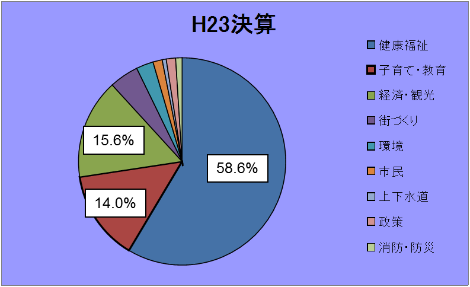
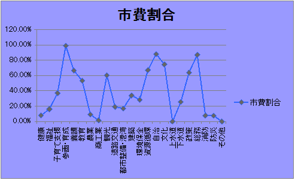

このサイトは、2013年2月23日 Chiba Open Data Day 2013 - こどもNo.1千葉 - における「税金はどこへ行った？」グループの参加者が協力して構築しました。 その過程でH23決算に関して気付いたことをまとめ、最終的に成果発表のスライドを作成しました。
一日あたりの金額以外に、Chiba Open Data Day 2013のテーマである子育てについて、一部のサービスの受益と負担の関係の見える化を行いましたが、その見せ方にはまだまだ工夫が必要ですし、他の分野も含めた受益と負担の全体像の見える化の実現、他都市との比較など、更なる充実を目指し、今後継続して成長させていきたいと考えています。
「健康福祉」と「子育て･教育」に7割以上を投入

市費割合の高い「参画･育成」や「自治」は重点施策

Chiba Open Data Day 2013ののオープニングセッションにおけるWHERE DOES MY MONEY GO?千葉市版プロジェクト紹介
ハッカソンやオープンデータ関連のイベントを利用した私たちの自治体版 WHERE DOES MY MONEY GO? 構築ガイド (chiba.spending.jpの構築を例にTipsなどを紹介)